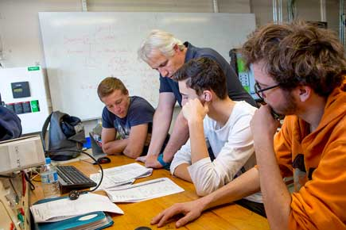

Le BTS Électrotechnique
Les champs d’activité que découvrira le diplômé du BTS Électrotechnique sont variés. C’est l’une des principales richesses de cette formation, dont l’objectif est d’apporter aux étudiants les connaissances techniques et le savoir-faire nécessaires pour intervenir dans la conception, la réalisation et la gestion de systèmes électrotechniques. En tant que professionnel électricien, responsable d’une équipe agissant fréquemment à l’extérieur de sa propre entreprise, il développe des compétences relationnelles, économiques et commerciales. Il porte également une attention particulière à la promotion de la santé et de la sécurité au travail (SST). Il est amené à travailler dans différents domaines : l’énergie électrique (la production, la distribution), la conversion d’énergie (électromécanique, électrothermique, électrochimique, éclairage), la gestion de l’information (automatisme, réseaux industriels et informatiques), l’automatique (systèmes asservis, régulation), la sécurité (par rapport aux risques électriques et autres) ainsi que les mesures et les essais ...
Au cours des deux années d’études, l’étudiant est en relation permanente avec le monde du travail via :
- l’exploitation pédagogique de thèmes d’étude issus du secteur industriel
- deux périodes en entreprise :
- un stage ouvrier, de découverte de l’entreprise - 2 semaines en première année
- un stage de technicien - 4 semaines en deuxième année
- la réalisation, en 2ème année, d’un projet de fin d’études en liaison avec des partenaires extérieurs.
La poursuite d'études
Possibilité de rentrer dans la vie active
Les actus de l'enseignement supérieur
L'enseignement supérieur La Salle Avignon est dynamique et toujours en projet